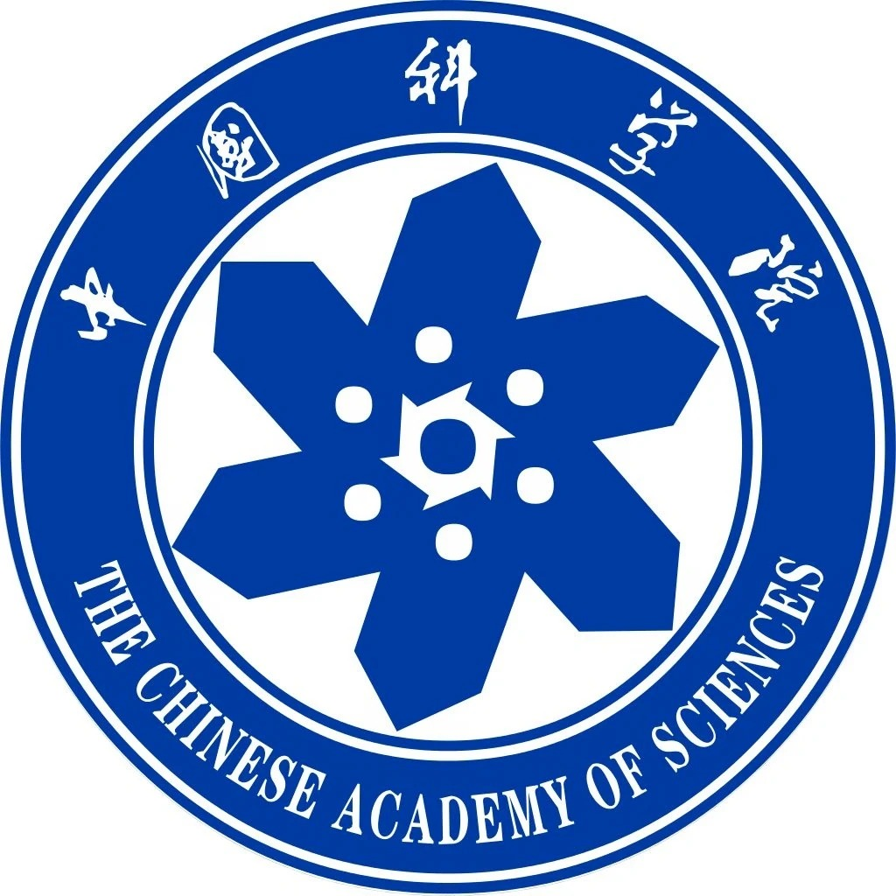
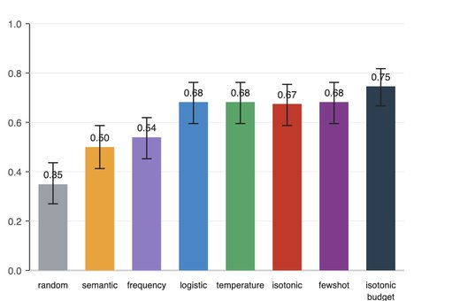
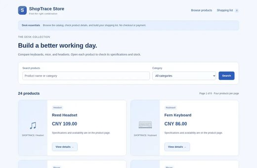
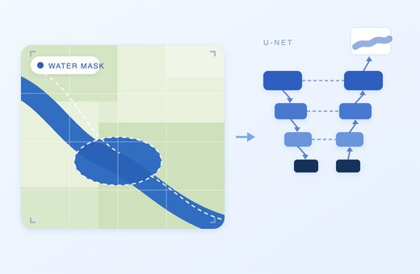
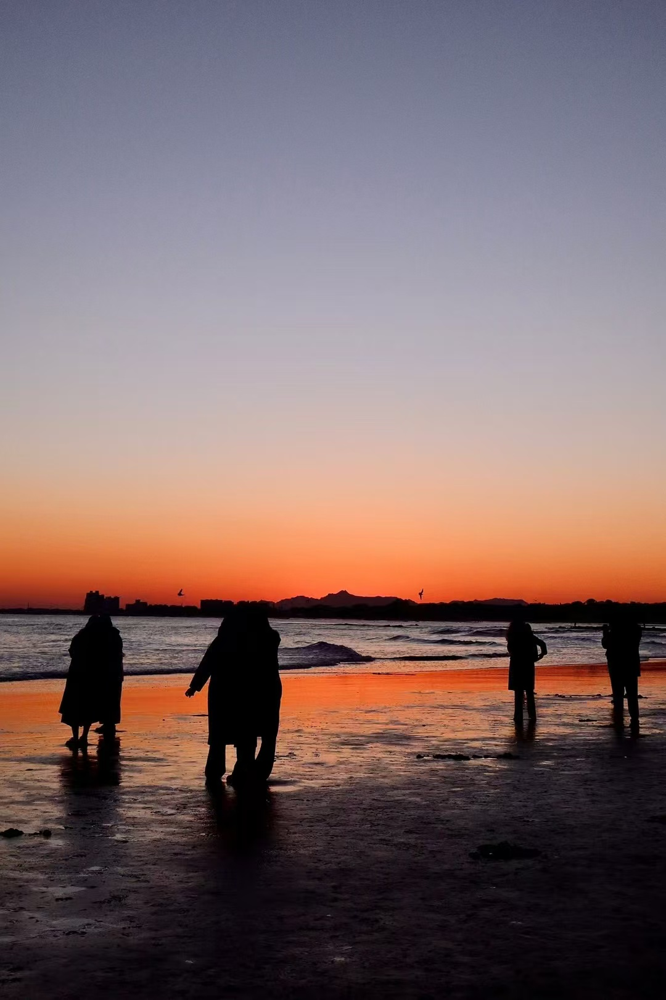
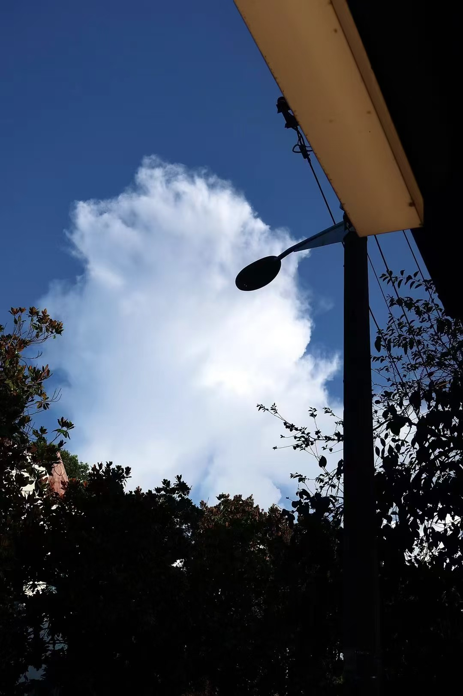
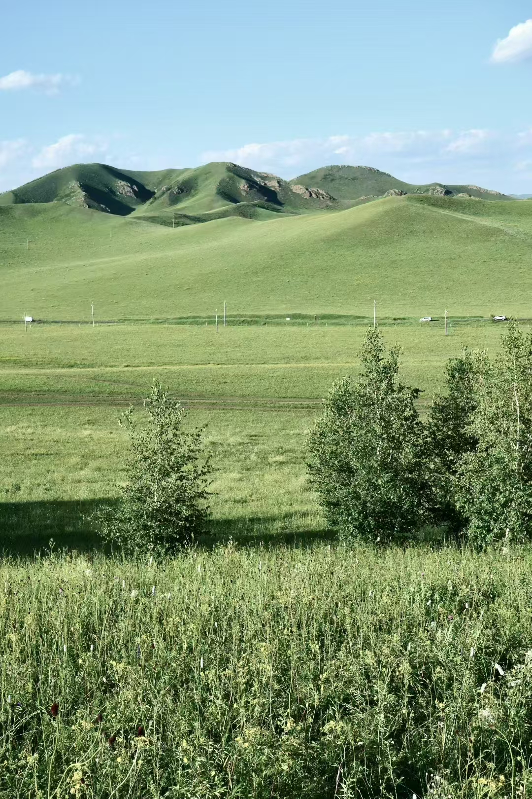
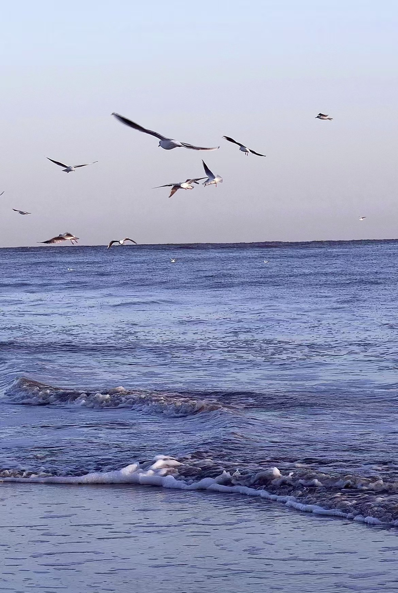

About
Hiii~ I graduated from BFU with a B.Sc. in Geographic Information Science and a Micro-degree in Artificial Intelligence and Its Applications. I will join HKUST(GZ) as a postgraduate student in Data-Centric AI (DCAI) in Fall 2026, so excited for this new chapter :) !
I enjoy things that are creative, and I'm always happy to connect with like-minded friends (^ ^) !
Research Interests
- AI for Science — LLM evaluation & scientific knowledge discovery
- Data-Centric AI — Training data curation, quality assessment, denoising
- Web Agent — LLM agents that plan and act in real browsers
- Self-Evolution — Agents that rewrite, select and accumulate their own skills
- Auto-Research — Automated literature search and scientific discovery
- Multi-modal Data — Scientific literature, satellite imagery, structured datasets
Education
Fall 2026
The Hong Kong University of Science and Technology (Guangzhou)
Data-Centric AI (DCAI)
Sep 2022 – Jun 2026
Beijing Forestry University (BFU)
B.Sc. Geographic Information Science
Micro-degree: Artificial Intelligence and Its Applications
Experience
May 2026 – Present
AI for Science Institute (AISI)
Intern, Science Navigator | Beijing, China
Jul 2025 – Oct 2025
Beijing Data Intelligence Information Technology Co., Ltd
Intern, Monitoring & Survey Department | Beijing, China

Feb 2025 – Jul 2025
Institute of Geographic Sciences & Natural Resources Research, CAS
Intern, Habitat Rehabilitation & Vegetation Restoration | Beijing, China
Honors & Awards
- Finalist (Top 2%) — Mathematical Contest in Modeling (MCM) · International · Jan 2025
- Second Prize — China Undergraduate Mathematical Contest in Modeling (CUMCM) · Provincial · Sep 2024
- Municipal-Level Innovation Program — Rice Yield Prediction in Southern China · Jul 2023
Projects

SkillEvo: Skill Selection and Memory Module for Agent Systems

ShopTrace: Evaluating LLM Agents on Web Shopping Tasks

Multimodal Water-Body Semantic Segmentation with U-Net

Rice Yield Prediction Using High-Precision Surface Modeling & AI
Interests
Photography
Hiking
Swimming
Painting
Reading
Writing



